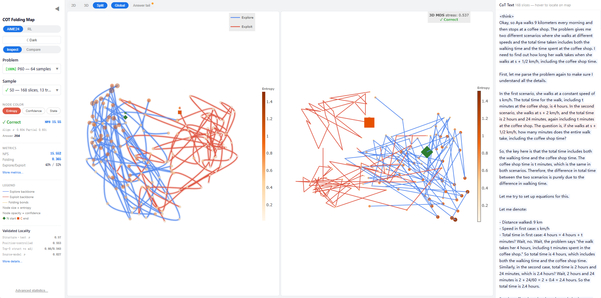
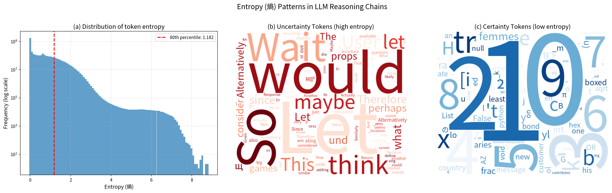
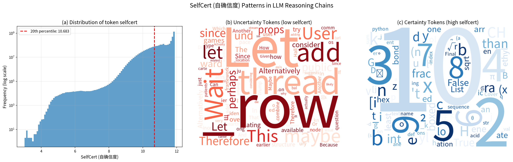

Research projects and technical work.

Treating Chain-of-Thought reasoning as analogous to protein folding. The framework measures pairwise similarity between token segments using neuron activation patterns (NAD) to reveal how reasoning "folds" in activation space, forming compact cores, long-range return connections, and drifting branches. Proposes Native Fold Score (NFS), a fully unsupervised, parameter-free quality metric for CoT reasoning that requires no correctness labels.


Independent reproduction and extension of the Qwen team's work Beyond the 80/20 Rule (project page, NeurIPS 2025), which discovers that token entropy in LLM reasoning chains follows an 80/20 distribution -- only ~20% of tokens carry high entropy and drive effective reasoning, while the remaining ~80% are low-entropy structural tokens. Extends the original analysis with five-metric comparison (Entropy, Confidence, Gini, LogProb, SelfCert), bimodal word analysis, multilingual CoT analysis (Chinese, Japanese, Korean), and entropy-frequency correlation study across 539K+ samples and 70M+ token instances.
A full-stack intelligent academic paper platform with two integrated subsystems: a Paper Writing Assistant for uploading, editing, compiling, and scoring LaTeX papers with AI-powered feedback (GLM-4), featuring real-time compilation, Monaco editor with SyncTeX bidirectional sync, and multi-dimensional scoring; and an ArXiv Paper Agent for automated daily ArXiv paper fetching with six-dimensional scoring and personalized recommendations.